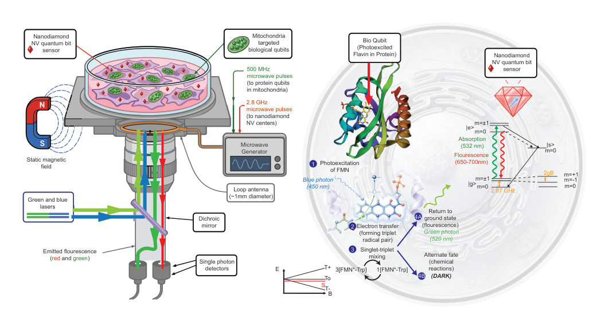
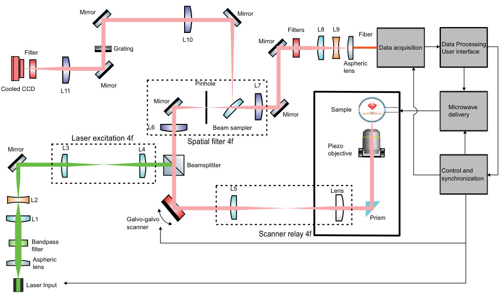

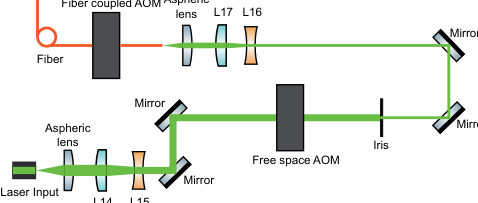

← Index · ← Previous · Next →
Authors: Javier Noé Ramos-Silva, Sangjun Noh, Minghao Jiang, Parisa Aghaei, Ayla Hazrathosseini, Jocelyn Leon, Philip Hemmer, Peter J. Burke
Type: experiment · Category: quantum information and computing · PDF: https://arxiv.org/pdf/2607.03552v1
Analysis basis: full PDF text, analyzed in chunks
Topic relevance: 🔥 QC/QI experiment 4/5 · spintronics-quantum-optics interface 3/5 · quantum measurements 2/5 · quantum optics experiment 2/5 · Tavis-Cummings & cavity-many-emitter 1/5 · correlated cavity matter 1/5 · exotic spin models in light-matter 1/5



Summary. The paper introduces a revolutionary pulsed quantum microscope designed to simultaneously probe and manipulate both solid-state NV center qubits and genetically encoded biological spin qubits inside living cells. By integrating advanced optics, fast pulsing electronics, and multi-frequency control, the platform enables multiplexed quantum sensing. This breakthrough paves the way for realizing entanglement between artificial solid-state systems and complex biological quantum states.
Why it may be interesting. This work is highly relevant as it pushes the experimental boundary of open quantum systems by creating a novel interface for controlling entanglement between solid-state defects and chemically sensitive biological molecules in real time.
Main problem. The central challenge is developing a single, integrated quantum microscope capable of simultaneously manipulating and sensing both solid-state (NV center) and genetically encoded biological qubits within the complex environment of live cells.
Main result. The authors report the development of a pulsed quantum microscope platform that successfully integrates dual excitation paths, time-resolved detection, and microwave control to enable multiplexed quantum sensing in living systems.
Method. The methodology involves building an advanced optical setup on an inverted microscope body, combining nanosecond-gated pulsing with precise magnetic field control across multiple frequency ranges (DC to 5 GHz).
Model / system. The platform integrates solid-state qubits (NV centers in diamond) and biological spin qubits (e.g., MagLOV/flavin radical pairs). The system is designed for pulsed operation, allowing time-resolved measurements on both types of qubits simultaneously.
Key observables. Quantum state manipulation, single-photon timing resolution, NV ODMR signals ($\sim2.87$ GHz), and optically activated delayed fluorescence from biological targets.
Important parameters / regimes. Nanosecond pulse gating, picosecond timing resolution, microwave control up to 5 GHz, and the ability to operate in a stationary-sample, live-cell geometry.
Assumptions / limitations. The primary assumption is that combining these disparate measurement modalities onto one platform overcomes current limitations in quantum sensing for biological applications.
Figures summary. Figures detail the system architecture, showing nested 4f relays, dual excitation paths (520 nm and 450 nm), and schematics of pulsed laser drivers and microwave delivery systems.
Paper structure. The paper progresses by detailing the necessary components—pulsed optics, advanced scanning mechanisms, and frequency control electronics—to merge two previously separate quantum sensing modalities into one unified, live-cell compatible instrument.
Two revolutions in quantum sensing are converging on the same microscope stage. Biological qubits have emerged as genetically encoded, optically addressable quantum systems inside live cells. Solid state spin based qubits have been entangled and used as nanoscale correlator magnetometers, delivering sensitivity and spatial-resolution gains that single-spin probes cannot reach. Here we report a pulsed quantum microscope that enables simultaneous quantum state manipulation of both qubit technologies in live cells. The platform combines nanosecond-gated optical excitation at 450 nm and 520 nm, three-dimensional diffraction-limited addressing by galvo beam scanning and piezo objective focus, rapidly switched static and radio-frequency magnetic fields, single-photon timing with picosecond resolution, and microwave control for frequencies from DC to 5 GHz, including the 2.87 GHz resonance of solid state spins, the 500 MHz to 800 MHz resonance of radical pairs in biological qubits, and any future qubit resonance in the GHz range. Live cell imaging with simultaneous biological and solid state nanoparticle qubits in the same cell demonstrates the power of this technique for multiplexed quantum sensing. We anticipate this approach will open new opportunities for researchers to explore quantum sensing in live cells, and, ultimately, entanglement between a solid-state qubit and a protein-hosted spin qubit.
Authors: C. W. J. Beenakker, J. Sánchez Férnan, J. Tworzydło
Type: theory · Category: other · PDF: https://arxiv.org/pdf/2607.05112v1
Analysis basis: full PDF text, analyzed in chunks
Topic relevance: 🔥 analog quantum simulation 4/5 · non-equilibrium dynamics 3/5 · driven-dissipative phase transition 2/5 · methods for driven-dissipative 1/5 · non-equilibrium universality 1/5


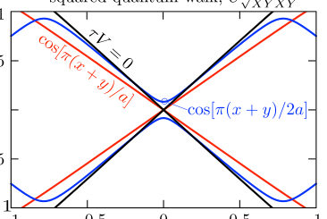

Summary. The paper investigates the topological stability of 2D Dirac quantum walks compared to their 1D counterparts. Through symmetry analysis and advanced mathematical techniques involving Laurent polynomials, the authors prove that local 2D constructions cannot sustain an unpaired zero-energy Dirac cone because locality forces a specific parity ($P=+1$), leading to inevitable gap opening under realistic disorder or potential scattering.
Why it may be interesting. This work provides a deep theoretical constraint on realizing topological edge/surface states using discrete quantum walks, showing that simple lattice discretizations fail where continuum models succeed, which is crucial for designing solid-state simulators or photonic analogs.
Main problem. The core problem is determining if a two-dimensional (2D) Dirac quantum walk maintains topological protection against disorder, contrasting it with the known robustness in continuum systems.
Main result. The authors demonstrate that for local 2D quantum walks, the protecting symmetries required to maintain an unpaired zero-energy Dirac cone are incompatible with locality constraints, leading to gap opening under potential scattering or disorder.
Method. The analysis combines symmetry arguments (chiral and time-reversal) with rigorous algebraic topology applied to the Floquet operator's Laurent polynomial representation on the torus.
Model / system. The system is a local two-band quantum walk modeled by a unitary Floquet operator acting on position and spin in 2D space-time. It aims to mimic massless Dirac fermions, contrasting with the known robust 1D case.
Key observables. Quasi-energy dispersion relation $\epsilon(\mathbf{k})$, gap opening magnitude ($\Delta$), and topological invariants like parity $P$.
Important parameters / regimes. Potential scattering strength ($V$), momentum transfer vectors ($Q$), and the dimensionality (2D vs 1D).
Assumptions / limitations. The analysis assumes a local, two-band spin-1/2 implementation of the quantum walk. The argument relies heavily on the algebraic characterization of locality via Laurent polynomials.
Figures summary. Figures illustrate momentum dependence of energy bands ($\epsilon(\mathbf{k})$), showing gap opening due to potentials ($V$ or $M$) in both the Ho-Chalker and squared QW models.
Paper structure. The paper progresses from comparing 1D vs 2D robustness, through specific model tests (Palindromic, Squared, Ho-Chalker), culminating in rigorous mathematical proofs using symmetry constraints and Laurent polynomials to show that locality forces $P=+1$, thus forbidding the unpaired cone.
It is known that a one-dimensional (1D) quantum walk gives a local space-time discretization of the massless Dirac equation with a single quasi-energy cone (no fermion doubling at low energies), keeping the fundamental symmetries (chiral and time-reversal) of the continuum theory. We show that the analogous 2D construction is fundamentally more fragile. Local two-band quantum walks can have an unpaired Dirac cone, but the protecting symmetries then cease to be ordinary on-site symmetries: they become non-symmorphic, involving half-lattice translations, and are broken by generic spatial inhomogeneities. In particular, we demonstrate that the 2D Dirac quantum walk based on the Ho-Chalker network model can be gapped by potential scattering.
Authors: Leon Adachi, Le Bin Ho
Type: both · Category: quantum information and computing · PDF: https://arxiv.org/pdf/2607.04656v1
Analysis basis: full PDF text, analyzed in chunks
Topic relevance: 🔥 QC/QI experiment 4/5 · quantum measurements 3/5 · entanglement & information structure 2/5 · measurement-induced transitions 1/5 · quantum optics experiment 1/5

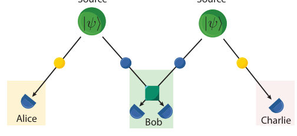
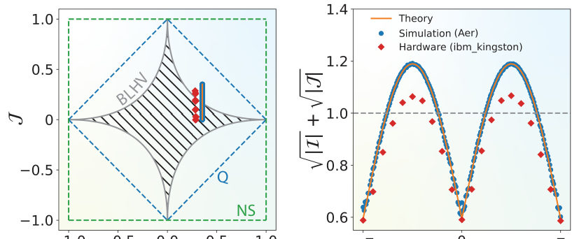
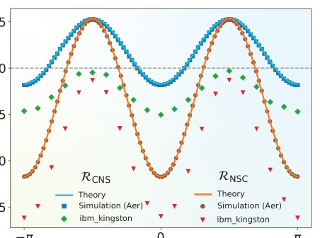

Summary. This paper introduces measurement geometry as an independent resource for certifying network nonlocality in tripartite quantum networks. Using superconducting hardware and ancilla-assisted circuits, the authors demonstrate that the optimal settings required to violate bilocal versus fully network nonlocal witnesses are distinct. This establishes a practical route for quantifying nonlocality based on experimental measurement choices.
Why it may be interesting. This work is highly relevant as it moves beyond simply proving entanglement exists; instead, it quantifies nonlocality based on how measurements are performed, providing a concrete resource metric for quantum network characterization.
Main problem. The research develops an operational framework to certify network nonlocality beyond entanglement, focusing on how measurement design itself acts as a quantifiable resource.
Main result. Measurement geometry is shown to be an independent resource for network nonlocality, as the optimal settings for certifying bilocal versus fully network nonlocality differ significantly. The study successfully demonstrated this violation on superconducting hardware while showing FNN certification requires substantially stronger experimental conditions than BLHV.
Method. The authors developed and implemented ancilla-assisted meter circuits to evaluate nonlocal observables required for both bilocal (BLHV) and fully network nonlocality (FNN) witnesses in a tripartite quantum network.
Model / system. The system modeled is the bilocal Alice–Bob–Charlie quantum network, initialized with two independent entangled pairs. The framework tests correlations against classical models ranging from LHV to FNN, which are quantified using specific nonlocal observables.
Key observables. BLHV witness violation ($S_{ ext{BLHV}}$) and FNN witnesses ($ ext{RCNS}, ext{RNSC}$), compared against their respective classical bounds (1 and 3).
Important parameters / regimes. The measurement settings $(\varphi, \phi)$ applied at Bob's node are critical parameters that determine the accessible level of nonlocality.
Assumptions / limitations. The study assumes the ability to perform complex joint measurements using ancilla-assisted circuits on programmable quantum processors like superconducting qubits.
Figures summary. Figures illustrate the hierarchy of correlation sets ($ ext{BLHV} \subset \dots$), show the bilocal network setup, and map out how BLHV and FNN witnesses vary across the measurement parameter space $(\varphi, \phi)$, revealing distinct optimal settings for each type of nonlocality.
Paper structure. The paper first establishes the theoretical hierarchy of nonlocality models. It then develops the operational framework using ancilla-assisted circuits to measure observables. The core analysis involves mapping out how BLHV and FNN witnesses depend on Bob's joint measurement geometry, culminating in hardware demonstrations comparing the two.
Quantum networks can exhibit nonclassical correlations that cannot be explained by classical models with independent sources. While the role of entanglement is well understood, the impact of measurement design remains largely unexplored. Here we develop an operational framework for certifying network nonlocality in the bilocal Alice--Bob--Charlie network using ancilla-assisted meters to evaluate the nonlocal observables required for bilocal and fully network nonlocal (FNN) witnesses. The approach successfully reproduces both bilocal and FNN correlations in simulation. On the 156-qubit superconducting processor \textit{ibm_kingston}, we observe bilocal nonlocality with $\mathcal{S}_{\rm BLHV}=1.067(6)>1$ after readout-error mitigation, while the FNN witnesses reach $99\%$ and $96\%$ of their certification thresholds, implying the substantially stronger requirements for FNN certification. We further show that Bob's joint measurement determines the accessible level of network nonlocality: bilocal and FNN certification are optimized by different measurement settings, while both violations can disappear even for maximally entangled states. These results identify measurement geometry as an independent resource for network nonlocality and provide a practical route toward its certification on programmable quantum processors.
Authors: Jaume Cunill-Subiranas, Fabian Resare, Suocheng Zhao, Sofia Qvarfort, A. Metelmann, Carles Navau, Witlef Wieczorek
Type: theory · Category: other · PDF: https://arxiv.org/pdf/2607.03622v1
Analysis basis: full PDF text, analyzed in chunks
Topic relevance: 🔥 quantum measurements 4/5 · measurement-induced transitions 3/5 · Keldysh / 2PI / non-Gaussian methods 1/5 · driven-dissipative phase transition 1/5
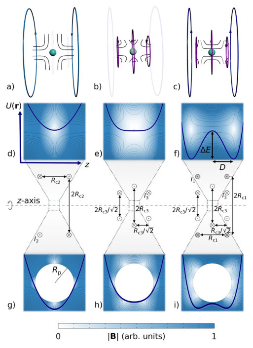
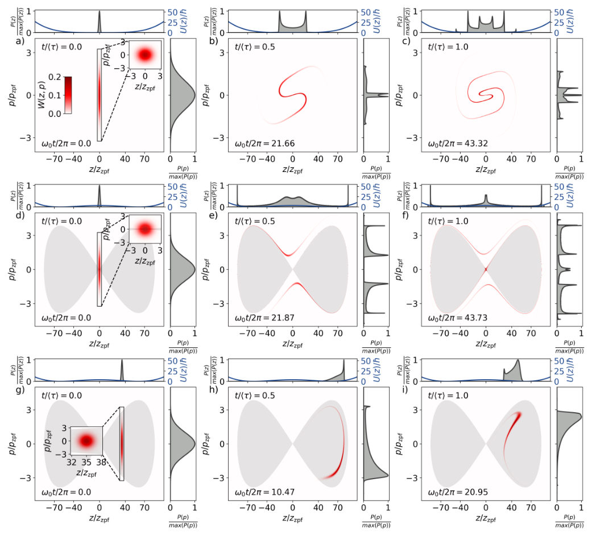
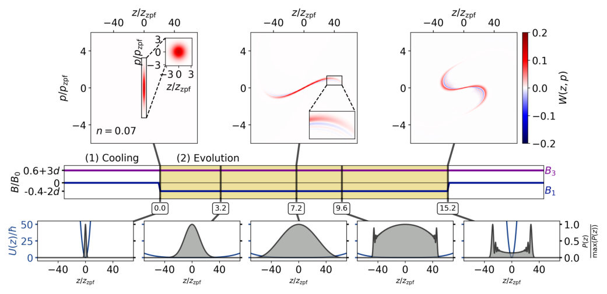
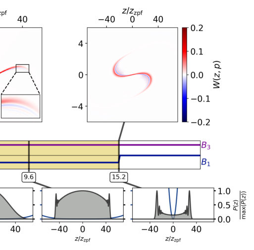
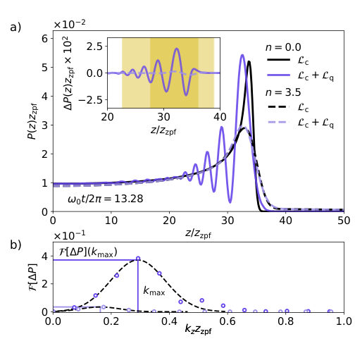
Summary. This paper demonstrates how magnetic higher-order traps can confine superconducting microparticles to generate anharmonic potentials necessary for observing macroscopic quantum interference. By controlling the trap landscape using static coils, researchers can manipulate the center-of-mass motion into non-Gaussian states. This opens a new experimental avenue to test fundamental physics questions regarding the quantum-classical transition with massive objects.
Why it may be interesting. This work directly addresses quantum mechanics at macroscopic scales using a clean, controllable physical system (superconductors) and advanced trapping techniques, which is highly relevant to AMO physics concerning quantum measurement and decoherence.
Main problem. The research aims to generate and study macroscopic quantum interference effects in the center-of-mass motion of levitated superconducting microparticles.
Main result. The use of magnetic higher-order traps allows for generating non-Gaussian motional states, opening a path to fundamental experiments studying the quantum-to-classical transition with masses exceeding picograms.
Method. The authors analyze the dynamics in phase space using anharmonic potentials (like Duffing or double-well types) derived from magnetostatic higher-order traps. They also provide protocols for distinguishing classical from quantum behavior via position measurements.
Model / system. The system involves superconducting microparticles levitated by magnetic fields, where the trapping potential is engineered using static arrangements of coils to create anharmonic potentials (e.g., hexapole terms). The dynamics are modeled in phase space, sometimes utilizing a Wigner function approach for analysis.
Key observables. Non-Gaussian motional states, position measurement statistics used to distinguish classical vs. quantum behavior.
Important parameters / regimes. Masses larger than picogram ($10^{13}$ atomic mass units), anharmonicity realized on sub-nanometer length scales.
Assumptions / limitations. The analysis often relies on the small-sphere approximation for simplifying the complex potential calculation, although general field generation is discussed.
Figures summary. Figure 1 illustrates various magnetic traps (harmonic and anharmonic) for superconducting particles using coil configurations and resulting potentials (e.g., double-well).
Paper structure. The paper establishes the physical platform (superconducting levitation), details the theoretical tool (HOTs generating anharmonic potentials), proposes protocols to generate nonclassical states, analyzes the dynamics in phase space, and concludes with experimental feasibility for fundamental tests.
We show how magnetostatic higher-order multipole traps can be used to generate macroscopic quantum interference of the motion of levitated superconducting microparticles. An appropriate combination of multipolar magnetic fields offers great versatility in constructing various trap potentials, including anharmonic trap potentials such as Duffing or double-well types. Crucially, the anharmonic trap potentials realize a nonlinearity on the order of hundred times the zero-point motion, i.e., on a length scale below nanometers. These anharmonic potentials allow for the generation of quantum features of the center-of-mass motion of a magnetically levitated superconducting microparticle. Importantly, they can be easily generated with a static arrangement of coils, requiring only that the current running through them is tunable. We propose protocols exploiting the versatility of the magnetic trap landscape to generate non-Gaussian motional states. We solve the dynamics of the center-of-mass motion of the particle in phase space and analyze its parameter dependence. Furthermore, we give a recipe to distinguish classical from quantum behavior in a statistically meaningful way through measurement of the position of the particle. Our results open a path to accessing the quantum regime of the center-of-mass motion of objects with masses larger than picogram, i.e., $10^{13}$ atomic mass units. This will enable fundamental physics experiments for studying the transition between quantum and classical behavior, exploring the intersection between quantum physics and gravity as well as probing of certain types of dark matter.
Authors: Alexandre C. Orthey, Magdalena Stobińska-Moretto
Type: theory · Category: quantum information and computing · PDF: https://arxiv.org/pdf/2607.04035v1
Analysis basis: full PDF text, analyzed in chunks
Topic relevance: 🔥 quantum measurements 4/5 · entanglement & information structure 3/5 · QC/QI experiment 1/5 · measurement-induced transitions 1/5
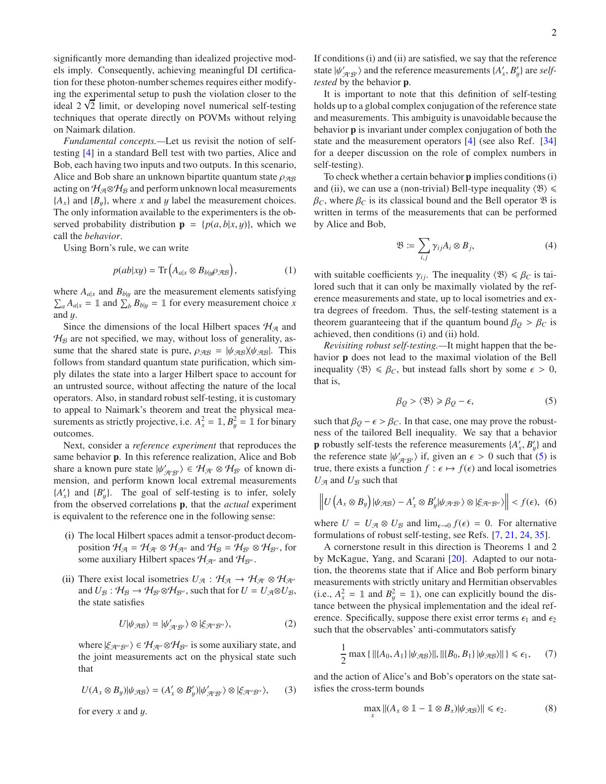

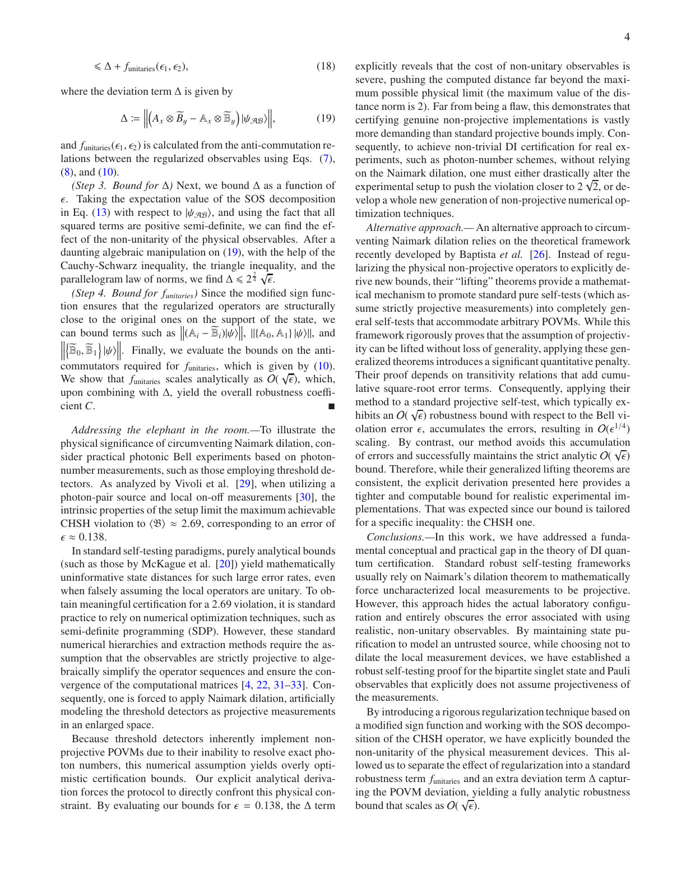
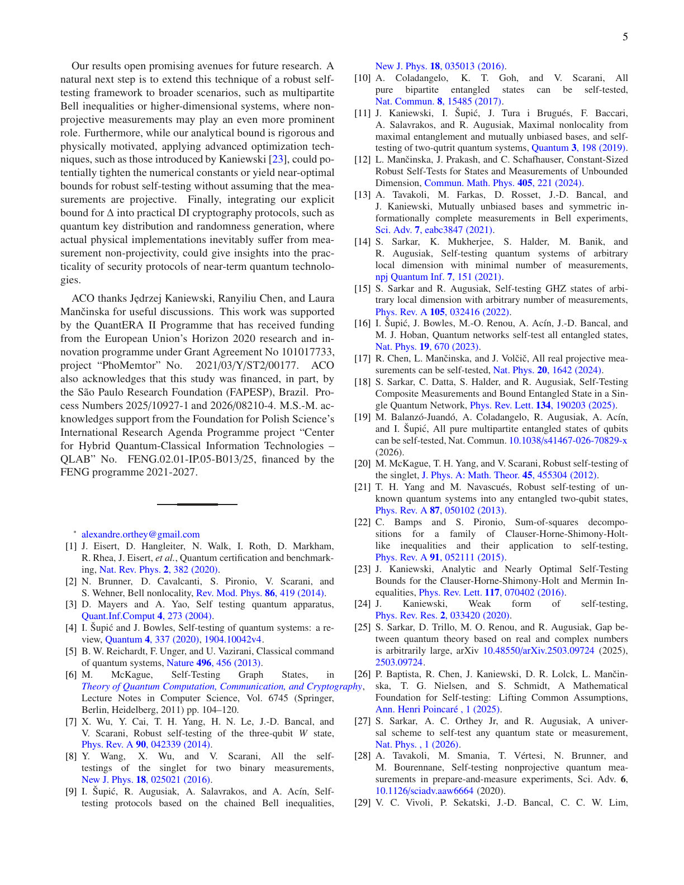
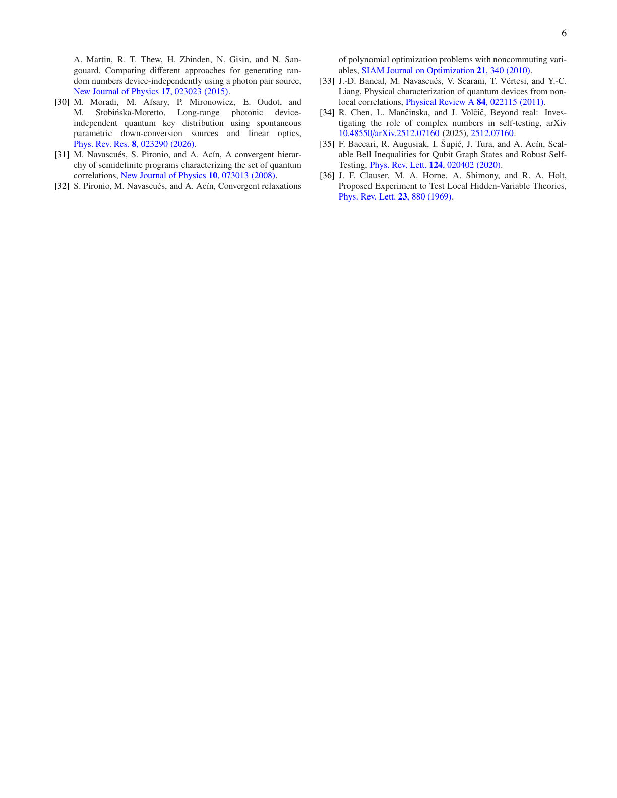
Summary. This paper develops a rigorous theoretical framework to self-test maximally entangled states without assuming that local measurements are perfectly projective. By regularizing general POVMs and deriving an $O(\sqrt{\epsilon})$ robustness bound, the authors show that real-world measurement imperfections impose stricter limitations on entanglement certification than previously thought.
Why it may be interesting. This work provides a crucial refinement for device-independent quantum information protocols, offering a more physically accurate assessment of entanglement certification when measurement apparatuses are imperfect or non-ideal.
Main problem. To develop a robust self-testing protocol for entangled quantum states that accurately accounts for non-projective, realistic local measurements, bypassing the limitations of standard methods relying on Naimark dilation.
Main result. The authors derive an analytic robustness bound scaling as $O(\sqrt{\epsilon})$ for certifying entanglement using general POVMs, showing that real experimental constraints impose a significantly higher cost than idealized projective models suggest.
Method. They regularize physical non-projective operators using a modified sign function and decompose the total error into terms related to regularization ($\Delta$) and standard unitaries (funitaries), bounding both analytically.
Model / system. The study focuses on certifying the maximally entangled two-qubit singlet state using local measurements $\{A_x\}$ and $\{B_y\}$, modeled by general binary POVMs, rather than assuming ideal projective measurements.
Key observables. CHSH Bell operator expectation value ($\langle B angle$), local measurement probabilities $p(a, b|x, y)$, and the error parameter $\epsilon$.
Important parameters / regimes. The robustness bound scales as $O(\sqrt{\epsilon})$, where $\epsilon$ quantifies the deviation from ideal entanglement.
Assumptions / limitations. The primary assumption challenged is that local observables must be strictly projective (unitary); the work explicitly circumvents Naimark dilation by regularizing operators instead.
Paper structure. The paper establishes a framework to test entanglement robustly, first addressing the failure of standard methods due to non-projective measurements. It then introduces regularization techniques and derives an analytic bound on the total error ($\Delta + ext{funitaries}$) based on the measured Bell violation $\epsilon$.
Standard device-independent self-testing uses Naimark dilation to assume projective measurements, masking the operational limitations of realistic non-unitary observables. We establish a robust pure self-test for the singlet and Pauli observables that entirely circumvents dilation of the measurement apparatus. Assuming a pure state to model an untrusted source, we regularize the physical non-projective operators and derive an analytic $\mathcal{O}(\sqrtε)$ robustness bound. Our results suggest that device-independent certification of real implementations is significantly more demanding than standard projective models imply.
Authors: Bin Xi, Ken Chen, Qiang Luo, Jie Lu, Jia-Wei Mei, Hong-Gang Luo, Jize Zhao
Type: theory · Category: strongly correlated electrons · PDF: https://arxiv.org/pdf/2607.03707v1
Analysis basis: full PDF text, analyzed in chunks
Topic relevance: 🔥 analog quantum simulation 4/5 · exotic spin models in light-matter 3/5 · spintronics-quantum-optics interface 1/5
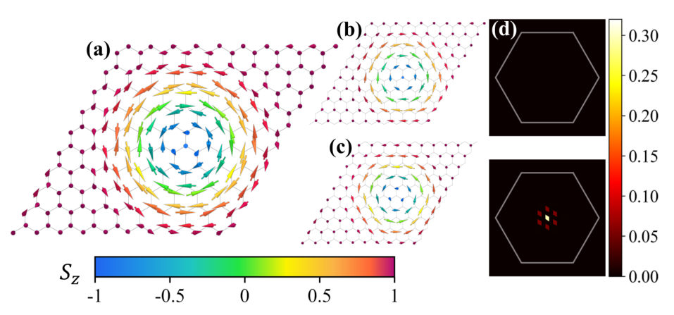


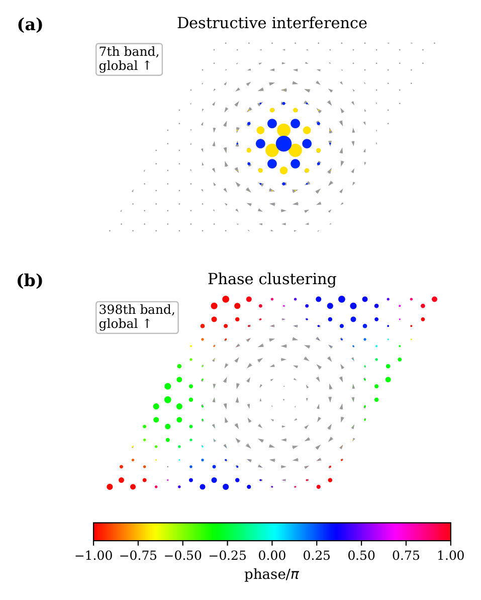
Summary. This work proposes that a Double-Helix Skyrmion Crystal (DHSKX) can realize flat Chern bands by exploiting phase clustering mechanisms within its spin texture. This approach achieves robust topological states in a 'beyond-adiabatic' regime, offering a pathway to engineer fractional quantum Hall physics using controllable magnetic architectures.
Why it may be interesting. The concept of using geometric frustration and specific magnetic textures (skyrmions) to engineer topological electronic properties is highly relevant for designing novel quantum materials and artificial lattices.
Main problem. The central challenge addressed is engineering flat Chern bands by suppressing kinetic energy while simultaneously preserving non-zero Berry curvature.
Main result. A double-helix skyrmion crystal (DHSKX) provides a mechanism to achieve this, exhibiting isolated flat $|C|=1$ Chern bands and hosting signatures consistent with $ u=1/3$ Laughlin-type Fractional Chern Insulator physics in a beyond-adiabatic regime.
Method. The analysis uses the double exchange model Hamiltonian, calculating band properties via Kubo response and Fukui-Hatsugai-Suzuki construction, supplemented by band-projected exact diagonalization for finite-size evidence.
Model / system. The system is a Double-Helix Skyrmion Crystal (DHSKX), derived as the classical ground state of a frustrated honeycomb spin model under double exchange. It features two sublattice-resolved skyrmion textures locked at opposite helicities.
Key observables. Flatness of bands ($\gtrsim 10$), Chern number ($C$), Quantum Geometry metric ($\sigma_{QG}$), and evidence for Laughlin-type fractional filling ($ u=1/3$).
Important parameters / regimes. The coupling ratio $t/J_H$, which defines the 'beyond-adiabatic window' where optimal quantum geometry is achieved.
Assumptions / limitations. The results are based on a representative microscopic generator (frustrated honeycomb model) but suggest the architecture is generally applicable to various physical platforms.
Figures summary. Figures illustrate the DHSKX spin textures, the evolution of flat Chern bands across coupling regimes showing $|C|=1$ and $C=-2$ branches, and real-space wave function fingerprints demonstrating phase clustering.
Paper structure. The paper establishes the physical problem (flat band engineering), introduces the DHSKX model, details the mechanism (phase clustering leading to destructive interference), presents results showing flat bands in a beyond-adiabatic regime, and concludes by mapping the architecture onto programmable platforms.
A central challenge in flat-band engineering is suppressing kinetic energy without sacrificing Berry curvature. We show that a double-helix skyrmion crystal (DHSKX)--two sublattice-resolved skyrmion textures locked at opposite helicities, obtained here as the classical ground state of a frustrated honeycomb spin model--provides such a route under double exchange. The key mechanism is a single real-space organization, phase clustering: the $π$-locked helicities expel the wave function's phase winding from the skyrmion cores, and the magnetic $C_3$ symmetry pins it into three phase-locked clusters whose distributed destructive interference cancels net transport while preserving the Berry curvature. Ordinary skyrmion crystals, even with the same symmetry, do not develop this organization. Phase clustering yields isolated flat $|C| = 1$ Chern bands over broad coupling windows, one of which surpasses the adiabatic reference in quantum geometry at intermediate coupling. In this beyond-adiabatic window, band-projected exact diagonalization gives finite-size evidence consistent with $ν= 1/3$ Laughlin-type fractional-Chern-insulator physics; the same texture also hosts a higher-Chern ($C = -2$) flat band. Built from site-resolved complex hoppings alone, the DHSKX architecture is directly programmable in topolectric, acoustic, and photonic platforms.
Authors: Jordi Pera, Joaquim Casulleras, Jordi Boronat
Type: theory · Category: quantum gases · PDF: https://arxiv.org/pdf/2607.05328v1
Analysis basis: full PDF text, analyzed in chunks
Topic relevance: 🔥 analog quantum simulation 4/5 · exotic spin models in light-matter 3/5 · Keldysh / 2PI / non-Gaussian methods 1/5
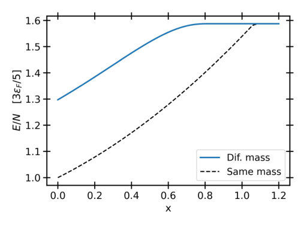
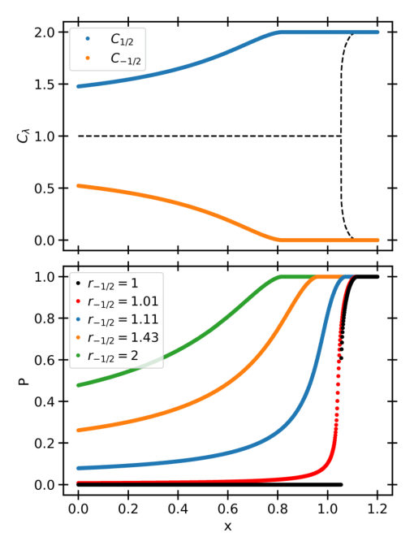


Summary. This paper analytically describes itinerant ferromagnetism in mass-imbalanced SU(N) Fermi gases by calculating the second-order energy corrections. The key finding is that mass imbalance fundamentally changes the magnetic transition path, leading to continuous polarization rather than a sharp discontinuity seen in balanced systems. This establishes mass ratio as a powerful control parameter for magnetism in ultracold atomic mixtures.
Why it may be interesting. This work provides a powerful theoretical tool—'mass engineering'—to control magnetic ordering in ultracold atomic mixtures, offering quantitative predictions that guide experimental realization using heterogeneous quantum gases.
Main problem. The study focuses on developing a fully analytical description of itinerant ferromagnetism in repulsive SU(N) Fermi gases, specifically investigating how mass imbalance among components affects the magnetic ordering.
Main result. Mass imbalance fundamentally alters the path to full polarization, causing it to occur continuously (for S=1/2) rather than discontinuously as predicted for equal-mass systems. The derived analytical expression provides a compact equation of state for these mixtures.
Method. The authors employ perturbation theory up to second order in the gas parameter $x = k_F a_0$ to derive the energy and beyond-mean-field corrections, yielding closed analytical expressions previously unavailable for mass-imbalanced cases.
Model / system. The system modeled is a zero-temperature, repulsive SU(N) Fermi gas characterized by arbitrary mass imbalance among its components. The physics is governed by interactions quantified by the s-wave scattering length $a_0$.
Key observables. Energy per particle ($E_N$), spin polarization (P), and occupation factors of different spin components.
Important parameters / regimes. The gas parameter ($x = k_F a_0$), the degree of mass imbalance (quantified by ratios $r_\lambda$), and the total spin degeneracy ($S$).
Assumptions / limitations. The analysis is restricted to zero temperature, repulsive short-range interactions ($a_0 > 0$), and relies on perturbation theory up to second order.
Figures summary. Figures illustrate the energy dependence on $x$ for mass-balanced versus imbalanced systems (Fig. 1). They also show how mass asymmetry leads to continuous polarization paths (Fig. 2) and plot the critical gas parameter required for full polarization as a function of maximum mass ratio (Fig. 3).
Paper structure. The paper builds from establishing the physical model (mass-imbalanced SU(N) Fermi gases) to deriving the second-order energy correction analytically. It then analyzes how this imbalance breaks symmetry, favors heavier components, and modifies the transition dynamics toward ferromagnetism across different spin values.
We report a fully analytical description of zero-temperature itinerant ferromagnetism in repulsive SU(N) Fermi gases with arbitrary mass imbalance among components. Using perturbation theory in the gas parameter x = kFa0, with kF the Fermi momentum and a0 the s-wave scattering length, we derive the second-order energy for arbitrary spin polarization and arbitrary mass ratio. Our main result is a closed analytic expression for the beyond-mean-field correction in mixtures with unequal masses. This analytical result extends the theory of dilute Fermi gases beyond the mass-balanced case and provides a compact equation of state for multicomponent mixtures. We show that mass imbalance breaks the paramagnetic symmetry already in the non-interacting limit, favors the occu pation of heavier components, and lowers the interaction strength required to reach a fully polarized state. For S = 1/2, the system evolves continuously from a mass-induced partially polarized state to full ferromagnetism. For larger spins, distinct mass distributions generate qualitatively differ ent polarization paths, including smooth and discontinuous sequences. Our results identify mass imbalance as a powerful control tool for magnetic ordering in ultracold Fermi mixtures.
Authors: Akimitsu Kirikoshi, Junya Otsuki
Type: theory · Category: strongly correlated electrons · PDF: https://arxiv.org/pdf/2607.04805v1
Analysis basis: full PDF text, analyzed in chunks
Topic relevance: 🔥 Kondo & dissipative impurity 4/5 · spintronics-quantum-optics interface 2/5 · Keldysh / 2PI / non-Gaussian methods 1/5 · analog quantum simulation 1/5


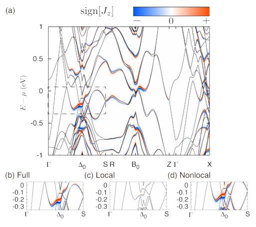

Summary. The paper theoretically investigates the anomalous Hall effect in $4f$ antiferromagnets by developing an effective Hamiltonian that couples itinerant conduction electrons to localized magnetic moments. The key finding is that the large intrinsic AHE conductivity arises not from local fields, but from nonlocal spin-dependent hopping mediated by Kondo exchange interactions. This establishes a fundamental mechanism for topological magnetotransport in strongly correlated systems.
Why it may be interesting. This work provides a detailed theoretical understanding of how non-local quantum interactions (Kondo exchange) can generate topological responses like the AHE in strongly correlated magnetic insulators, which is highly relevant for modern spintronics and topological materials research.
Main problem. The study aims to determine the microscopic origin of the intrinsic anomalous Hall effect (AHE) in antiferromagnetic metals containing localized $4f$ magnetic moments, where charge transport and magnetism are separated.
Main result. The AHE is found to originate primarily from nonlocal spin-dependent hopping induced by Kondo exchange coupling, rather than local Zeeman fields or canting ferromagnetism. This mechanism generates the necessary Berry curvature in the collinear AFM state.
Method. Theoretical calculations employing an effective Hamiltonian approach derived from $c-f$ hybridization, utilizing techniques like Green's function formalism and incorporating strong correlation effects via approximations (e.g., Hubbard-I).
Model / system. The system is a localized-$4f$ antiferromagnetic metal, exemplified by $ ext{Ce}_2 ext{CuGe}_6$. The model treats the interaction between itinerant conduction electrons ($c$) and localized $4f$ moments via an effective Hamiltonian incorporating Kondo exchange coupling.
Key observables. Intrinsic Anomalous Hall Conductivity ($\sigma_{DC}^{xy}$), spin splitting of energy bands, and Berry curvature hotspots.
Important parameters / regimes. The analysis focuses on the strong-coupling regime and the role of nonlocal vs. local hopping terms derived from $c-f$ hybridization.
Assumptions / limitations. Approximations include neglecting orbital degeneracy and using static limits for self-energy calculations, though the framework is built upon established correlated electron models.
Figures summary. Figures illustrate schematic processes of virtual $c-f$ hybridization, plot $\sigma_{DC}^{xy}$ dependence on canting magnetization ($m_z$), show band structures with spin splitting, and decompose AHC contributions based on orbital character (e.g., Ge $4p$).
Paper structure. The paper develops an effective Hamiltonian for conduction electrons incorporating strong correlations from localized $f$ moments. It then calculates the intrinsic AHE using current-current correlation functions and Berry curvature methods, systematically decomposing the contribution to pinpoint nonlocal hopping as the dominant mechanism.
The anomalous Hall effect in antiferromagnetic metals has attracted considerable attention. Most known realizations involve itinerant $d$ electrons that simultaneously mediate charge transport and magnetic order. Here, we focus on $f$-electron materials, where localized magnetic moments and conduction electrons are hosted in different orbitals. We develop a theoretical framework to describe the impact of localized antiferromagnetic order on itinerant electrons. Applying this approach to the recently discovered $4f$ antiferromagnetic metal $\mathrm{Ce}_{2}\mathrm{Cu}\mathrm{Ge}_{6}$, we identify the origin of both the intrinsic anomalous Hall conductivity and the spin splitting of the energy bands as spin-dependent intersite hopping induced by nonlocal Kondo exchange coupling, rather than a Zeeman-type effective field acting locally on the conduction electrons.
Authors: Ying-Lin Li, Po-Yao Chang
Type: theory · Category: strongly correlated electrons · PDF: https://arxiv.org/pdf/2607.03762v1
Analysis basis: full PDF text, analyzed in chunks
Topic relevance: 🔥 entanglement & information structure 4/5 · analog quantum simulation 2/5 · Keldysh / 2PI / non-Gaussian methods 1/5 · driven-dissipative phase transition 1/5
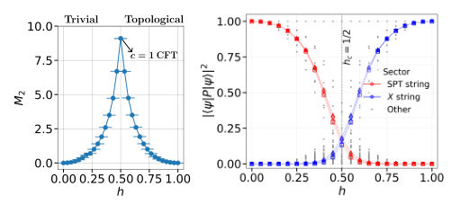

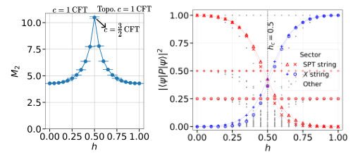
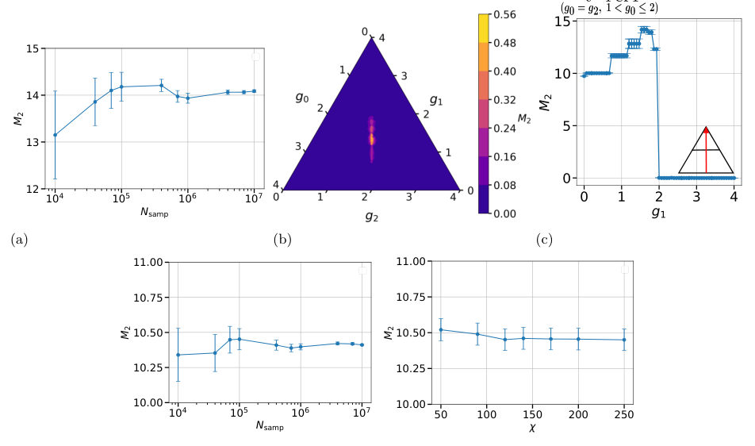
Summary. This work introduces the Pauli spectrum as a superior diagnostic tool for characterizing Symmetry-Protected Topological phases compared to entanglement measures like Stabilizer Rényi Entropy. By analyzing specific 1D models, the authors show that the characteristic crossing structure in the Pauli spectrum precisely tracks the exchange of non-local string order parameters across phase transitions. This provides a powerful theoretical framework for understanding topological quantum matter.
Why it may be interesting. The detailed analysis of duality transformations (local-unitary vs. non-invertible Kramers-Wannier) provides deep insight into the mathematical structure underlying topological phase transitions in quantum many-body systems relevant to condensed matter theory.
Main problem. The paper aims to develop quantum diagnostics beyond standard entanglement measures to characterize Symmetry-Protected Topological (SPT) phases in condensed matter systems.
Main result. While the Stabilizer Rényi Entropy provides only a coarse diagnostic, the Pauli spectrum reveals a characteristic crossing structure at phase transitions, offering finer information about the exchange of string order sectors.
Method. The study employs theoretical analysis using concepts like stabilizer entropy and analyzing the full probability distribution of Pauli strings (Pauli spectrum) across different topological phases.
Model / system. The research focuses on one-dimensional SPT phases, including gapped, non-intrinsically gapless, and intrinsically gapless types, modeled using cluster-type Hamiltonians like the Cluster Ising Model.
Key observables. Stabilizer Rényi Entropy (SRE), Pauli spectrum crossing structure, and non-local string order parameters.
Important parameters / regimes. The coupling constant $h$ in the Hamiltonian, which tunes the system between different topological regimes ($h < 1/2$ vs. $h > 1/2$).
Assumptions / limitations. It assumes that the Pauli spectrum crossing structure is robust and reflects fundamental changes in string order correlations across phase transitions.
Figures summary. Figures illustrate the SRE ($M_2$) and the Pauli spectrum for various models (cluster SPT, Ising model, igSPT), showing how the Pauli spectrum successfully detects transitions where SRE fails.
Paper structure. The paper progresses by introducing the problem of characterizing SPT phases beyond entanglement. It then analyzes specific models (Cluster SPT, Ising) using both SRE and Pauli spectra, establishing that the Pauli spectrum is superior for detecting phase changes due to its sensitivity to string order exchange mechanisms, which are mapped via local-unitary or non-invertible dualities.
Quantum entanglement is widely used as a diagnostic of topological phases of matter. Beyond entanglement, non-stabilizerness captures a distinct aspect of quantum many-body states by quantifying their distance from the manifold of stabilizer states. In this work, we study the stabilizer Rényi entropy in symmetry protected topological (SPT) phases, including both gapped SPT, non-intrinsically gapless SPT, and intrinsically gapless SPT phases. Under symmetry preserving perturbations, we find numerically that the stabilizer Rényi entropy exhibits an extremum near the phase transition. However, the stabilizer Rényi entropy alone cannot distinguish different SPT phases. In contrast, the Pauli spectrum reveals a characteristic crossing structure at the transition point. This crossing reflects the exchange of dominant Pauli-string correlations associated with the non-local string order parameters of the two topological distinct phases. For gapped SPT and non-intrinsically gapless SPT phases, the crossing structure can be understood from a local-unitary duality that maps the Pauli spectrum between the two phases. For intrinsically gapless SPT phases, such a local-unitary mapping is absent. Instead, we find that the Pauli spectrum mapping is generated by a non-invertible duality transformation. These results show that although the stabilizer Rényi entropy provides only a coarse diagnostic of phase transitions, the Pauli spectrum contains finer information about the exchange of string order sectors. Our findings demonstrate that quantum magic offers a complementary perspective for characterizing both gapped and gapless SPT phases.
Authors: Alex Steiner, Tomasz Andrzejewski, Phila Rembold, Hendrik Poulsen Nautrup, Christian D. Marciniak, Robert Freund, Ivan Pogorelov, Thomas Monz, Philipp Schindler, Marcel Meyer, Nicolai Friis
Type: experiment · Category: quantum information and computing · PDF: https://arxiv.org/pdf/2607.04227v1
Analysis basis: full PDF text, analyzed in chunks
Topic relevance: 🔥 QC/QI experiment 4/5 · entanglement & information structure 3/5
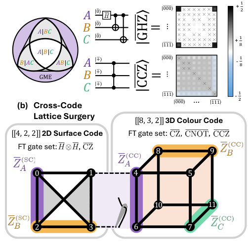


Summary. The research reports on generating and verifying genuine multipartite entanglement between logical qubits using a trapped-ion platform. The key technical advance is utilizing lattice surgery to combine two different Quantum Error Correction codes, thereby accessing a fault-tolerant universal gate set. This work validates the architectural components necessary for scaling up quantum computation.
Why it may be interesting. This work provides concrete, hardware-level evidence for the core building blocks required for fault-tolerant quantum computation by demonstrating complex logical entanglement generation beyond what is possible with a single error-correcting code.
Main problem. The goal is to experimentally demonstrate the generation and certification of genuine multipartite entanglement (GME) between logical qubits using a fault-tolerantly implemented universal gate set.
Main result. The authors successfully generated and certified GME for both stabiliser ($ ext{GHZ}$) and non-stabiliser ($\lvert ext{CCZ} angle$) states of three logical qubits. They also demonstrated arbitrary single logical qubit rotations using cross-code lattice surgery.
Method. The universal gate set is accessed by combining complementary Quantum Error Correction (QEC) codes (Surface Code and 3D Colour Code) via the technique of lattice surgery.
Model / system. The experiment is performed on a trapped-ion quantum processor using ${}^{40} ext{Ca}^+$ ions. Information is encoded into logical qubits protected by two different QEC codes, which are then merged and operated upon.
Key observables. Genuine Multipartite Entanglement (GME) certification via fidelity measurements ($ ext{F}{ ext{GHZ}}$, $ ext{F}$), the stabiliser norm ($D$), and expectation values for logical operators.}
Important parameters / regimes. The demonstration relies on accessing a universal gate set $\{H, \overline{\mathrm{CCZ}}\}$ by merging two distinct codes (e.g., $ ext{[[4,2,2]]}$ SC and $ ext{[[8,3,2]]}$ CC).
Assumptions / limitations. The primary limitation noted is that the noise model used is a simple depolarizing error model, which does not account for all microscopic physical processes.
Figures summary. Figures illustrate the definition of logical GME, the combination of QEC code blocks via lattice surgery, and comparative plots showing measured vs. simulated fidelities for $ ext{GHZ}$ and $\lvert ext{CCZ} angle$ states across different noise thresholds.
Paper structure. The paper details the theoretical necessity of cross-code lattice surgery to achieve a universal gate set, followed by experimental demonstrations of preparing GME states ($ ext{GHZ}$ and $\lvert ext{CCZ} angle$) and performing arbitrary single-qubit rotations using this combined resource.
Universal quantum computers are expected to generate arbitrary complex quantum states of logical qubits encoded in many physical qubits. This capability hinges on a fault-tolerantly implemented universal gate set, which no single quantum error-correction code admits transversally but which becomes accessible by joining complementary codes via lattice surgery. Here we report on the experimental generation and certification of logical genuine multipartite entanglement in a trapped-ion quantum processor using a transversally implemented universal logical gate set. The gate set is accessed via lattice surgery across two different codes and comprises a Hadamard gate on a four-qubit surface code and a doubly controlled Pauli-$Z$ ($\overline{\mathrm{CCZ}}$) gate on an eight-qubit 3D colour code. To showcase this lattice-surgery toolbox, we generate both stabiliser (Greenberger-Horne-Zeilinger) and non-stabiliser ($|\overline{\mathrm{CCZ}}\rangle$) states of three logical qubits and verify their genuine multipartite entanglement--a form of correlation beyond statistical mixtures of bipartite entanglement across any bipartition. We further use these cross-code primitives to demonstrate arbitrary rotations of single logical qubits via a $\overline{\mathrm{CCZ}}$-based resource gadget accessing the full universal gate set through lattice surgery. Together, these demonstrations showcase the core building blocks of an architecture for fault-tolerant quantum computation and its ability to generate complex logical quantum states.
Authors: Rajiv Kumar, Panch Ram, Levan Chotorlishvili, Sunil Kumar Mishra
Type: theory · Category: quantum information and computing · PDF: https://arxiv.org/pdf/2607.04399v1
Analysis basis: full PDF text, analyzed in chunks
Topic relevance: 🔥 analog quantum simulation 4/5 · Keldysh / 2PI / non-Gaussian methods 1/5 · driven-dissipative phase transition 1/5 · entanglement & information structure 1/5
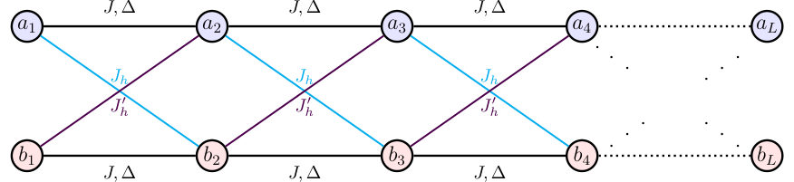
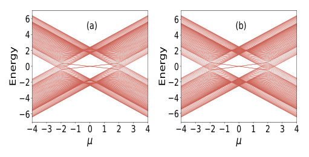

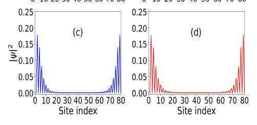
Summary. This paper theoretically analyzes the topological properties of a zigzag Kitaev chain to understand how its structure controls Majorana zero modes (MZMs). By varying superconducting phases and inter-chain couplings, the authors map out a phase diagram demonstrating regimes supporting two or four MZMs. This establishes the model as a promising minimal platform for realizing MZM-based quantum computation.
Why it may be interesting. This work directly addresses topological quantum computation by providing a concrete, tunable solid-state model (the zigzag chain) that supports multiple MZMs, which are crucial building blocks for fault-tolerant qubits.
Main problem. The study investigates the spectral and topological properties of a zigzag Kitaev chain, focusing on engineering Majorana zero modes (MZMs) for quantum computation.
Main result. The model establishes the zigzag Kitaev chain as a minimal platform capable of supporting distinct topological phases with two or four MZMs by tuning superconducting phase differences ($\phi$) and inter-chain couplings.
Method. Analysis employs the Bogoliubov-de Gennes formulation to calculate the energy spectrum, quasi-particle dispersion, and the winding number ($ u$).
Model / system. The system is a zigzag Kitaev chain constructed from two diagonally coupled one-dimensional Kitaev chains. The Hamiltonian includes hopping ($J$), pairing ($\Delta$), chemical potential ($\mu$), and coupling terms ($J_h, J'_h$) modulated by a superconducting phase difference $\phi$.
Key observables. Energy spectrum (gap closures), number of MZMs (two or four), and the topological invariant (winding number $ u$).
Important parameters / regimes. Superconducting phase difference ($\phi$), coupling strengths ($J_h, J'_h$), and chemical potential ($\mu$).
Assumptions / limitations. The analysis assumes Open Boundary Conditions (OBC) and that all model parameters are real.
Figures summary. Figures illustrate the energy spectrum dependence on $\mu$ for varying couplings, showing transitions between topological regimes supporting two or four MZMs. Dispersion relations for $\phi=0$ and $\phi=\pi$ are also presented.
Paper structure. The paper systematically analyzes the Hamiltonian using BdG theory, determining phase boundaries via gap closures, confirming topology using the winding number, and mapping out the complete phase diagram to demonstrate MZM control.
We investigate the spectral and topological properties of a zigzag Kitaev chain constructed from two diagonally coupled one dimensional Kitaev chains with a zero and finite superconducting pairing phase difference. Using a Bogoliubov-de Gennes formulation, we analyze the energy spectrum, distribution of Majorana zero modes (MZMs), the quasi-particle dispersion, and the winding number, respectively. For a zero phase difference, the resulting energy spectrum shows topological phases with two, four MZMs, and trivial regions. The phases of gap closure determine the topological phase boundaries. In particular, for the phase difference between $φ=π$, the degeneracy of MZMs is partially lifted, leading to modified topological phases compared to the case $φ=0$. The topological and trivial phase boundaries are further confirmed by evaluating the quasi-particle dispersion and the topological invariant, namely the winding number. We show that the zigzag Kitaev chain contributes independently to the total winding number $ν= 1$ and $2$, giving rise to distinct topological phases that support two and four MZMs. The $ν= 0$ gives rise to a trivial region. The energy spectrum of systems corroborates the analytical phase boundaries and reveals characteristics associated with hybridization, enabling us to obtain the complete phase diagram of the zigzag model. Our results establish the zigzag Kitaev chain as a minimal platform for engineering MZM quantum computations, with potential applications in the study of topological phases and Majorana based qubit physics.
Authors: Jiewei Ding, Ho-Kin Tang, Wing Chi Yu
Type: theory · Category: strongly correlated electrons · PDF: https://arxiv.org/pdf/2607.04621v1
Analysis basis: full PDF text, analyzed in chunks
Topic relevance: 🔥 analog quantum simulation 4/5 · exotic spin models in light-matter 1/5 · non-equilibrium dynamics 1/5
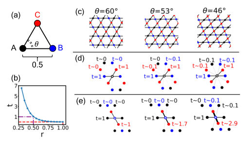
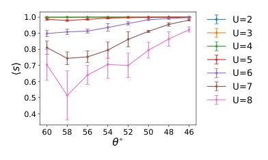
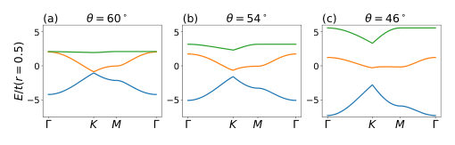
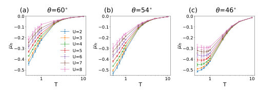
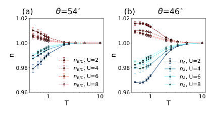
Summary. This work uses Quantum Monte Carlo simulations to study a Hubbard model on a compressed Kagome lattice. By varying the lattice angle $\theta$, the authors demonstrate that geometric changes induce sublattice differentiation, leading to an orbital-selective Mott phase. This highlights how geometry can compete with magnetic frustration to dictate the electronic ground state in strongly correlated materials.
Why it may be interesting. While focused on lattice geometry rather than direct AMO platforms, the concept of tuning interactions and correlations via engineered hopping anisotropy is highly relevant for designing quantum simulators using ultracold atoms or superconducting circuits.
Main problem. The study investigates the complex interplay between lattice geometry, magnetic frustration, and strong electronic correlations in two-dimensional systems.
Main result. Geometric compression induces sublattice differentiation, leading to an orbital-selective Mott phase and a rich U-theta phase diagram featuring multiple distinct metallic and Mott insulating states.
Method. The research employs Determinant Quantum Monte Carlo (DQMC) simulations on the half-filled Hubbard model.
Model / system. The system is modeled by the Hubbard Hamiltonian on a diagonally compressed Kagome lattice, incorporating long-range hopping via an exponential decay function $t(r)$.
Key observables. Double occupancy, charge compressibility ($\kappa$), spin-spin correlation functions ($G_z(r), G_x(r)$), and sublattice charge responses.
Important parameters / regimes. Lattice angle $\theta$ (compression parameter) and on-site interaction $U$.
Assumptions / limitations. The hopping amplitude is modeled by an exponential decay, and the analysis relies on interpreting the low-temperature behavior of compressibility to determine charge gaps.
Figures summary. Figures illustrate the lattice geometry changes with $\theta$, the evolution of hopping strengths between sublattices A, B, and C, and plots showing how compressibility ($\ln \kappa$ vs $1/T$) reveals insulating behavior at different angles.
Paper structure. The paper systematically analyzes the system by varying the compression angle $\theta$ and interaction strength $U$, using DQMC to map out a phase diagram characterized by distinct electronic and magnetic orders (PM-metal, AFM-Mott, etc.).
We perform determinant quantum Monte Carlo simulations of the half-filled Hubbard model on a diagonally compressed kagome lattice, introducing exponential decay long-range hopping $t(r) = t_0 \exp\bigl(-r / r_0\bigr)$ to account for the evolving bond length. By varying the lattice angle $θ$ and the on-site interaction $U$, double occupancy, charge compressibility, and spin-spin correlation functions of the whole system and each sub-lattice are measured. We find that geometric compression induces a clear sublattice differentiation: for $θ\gtrsim52^\circ$, the A sublattice establishes long-range hoppings, which in turn suppresses the metallic behavior of the $B/C$ sublattice and drives a selective Mott transition; for $θ\lesssim52^\circ$, the $B$-$C$ chains develop long-range antiferromagnetic correlations within the finite-size simulations, which in turn suppresses the metallic behavior of the $A$ sublattice and drives a selective Mott transition. The critical interaction $U^c_A$ for the $A$ sites decreases sharply near the onset of $B$-$C$ antiferromagnetic correlations, while $U^c_{B/C}$ increases. These competing orders give rise to an orbital-selective Mott phase and a rich $U$-$θ$ phase diagram featuring paramagnetic-metal, paramagnetic-Mott, antiferromagnetic-metal, and antiferromagnetic-Mott states. Our results highlight the complex interplay between lattice geometry, magnetic frustration, and strong correlations in frustrated two-dimensional systems.
Authors: Derek Reitz, Tony X. Zhou, Aditya Sharma, Ryan Bilotta, John McFarland, Aref Fouladi, Jacob Glasby, Aruna Ramanayaka, Zachary Stegen, Aaron Pesetski, Mark Covington, Gregory Boyd, Jeremy Clark
Type: both · Category: quantum information and computing · PDF: https://arxiv.org/pdf/2607.05072v1
Analysis basis: full PDF text, analyzed in chunks
Topic relevance: 🔥 QC/QI experiment 4/5 · Frenkel-Kontorova 1/5 · methods for driven-dissipative 1/5
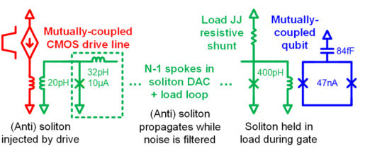


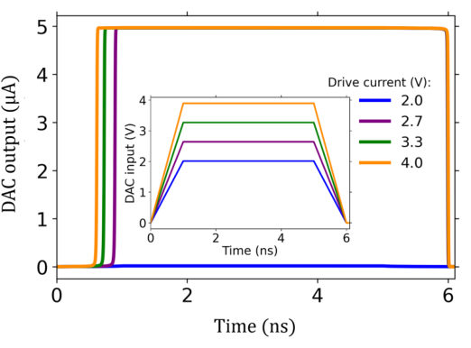

Summary. The paper introduces a novel superconducting Digital-to-Analog Converter (DAC) that uses solitons to generate precise flux pulses for controlling transmon qubits. This method filters control noise and achieves high-fidelity gates, demonstrating a path toward scalable quantum computation by replacing traditional microwave controls with robust digital electronics.
Why it may be interesting. This work directly addresses hardware bottlenecks in superconducting quantum computing by replacing microwave control lines with a solid-state, DC-controlled digital mechanism (the soliton DAC), which is highly relevant to building scalable quantum processors.
Main problem. The primary challenge is developing a scalable, low-noise control mechanism for superconducting qubits that overcomes limitations imposed by traditional microwave electronics.
Main result. A superconducting soliton DAC was demonstrated to perform high-fidelity S-gates on transmons with minimal excitation probability and robustness against external control noise up to the soliton injection threshold.
Method. The authors used a superconducting digital-to-analog converter (DAC) that generates flux pulses via propagating solitons, which are then applied to the qubit. Fidelity was measured using Interleaved Randomized Benchmarking (IRB).
Model / system. The system utilizes a DAC based on Josephson Junctions (JJs) whose dynamics are governed by the Sine-Gordon equation. This structure allows for DC control of flux pulses, enabling gate operations robust to fabrication variance.
Key observables. Quantum state excitation probability per gate ($ ext{0.05\%}$), S-gate fidelity ($\approx 1.9\%$ ), and non-local phase error ($1.6\%$ when scaling).
Important parameters / regimes. Soliton hold time (e.g., $5.6 ext{ ns}$), control noise attenuation ($\ge -80 ext{ dB}$ at qubit frequencies), and the soliton injection threshold ($I_{ ext{crit}}$).
Assumptions / limitations. The performance is limited by non-local, high-frequency electromagnetic interactions (EMI) when scaling to many DACs, which requires future layout mitigation strategies.
Figures summary. Figures illustrate noise filtering capability (Fig. 2), coherence preservation under control noise (Fig. 3), the coherent oscillation pattern of qubit excitation during gating (Fig. 5), and error analysis comparing single-DAC vs. multi-DAC operation (Fig. 6).
Paper structure. The paper progresses from introducing the DAC concept to demonstrating its noise immunity, quantifying gate fidelity, identifying non-local scaling errors via IRB, and finally proposing architectural solutions like resistive shunting for mitigation.
We introduce a superconducting digital-to-analog converter (DAC) that filters control noise, provides native multiplexing, performs quantum gates in nanoseconds, and can be controlled by CMOS. This is achieved by transducing a trapezoidal drive pulse into a superconducting soliton, which is then held in the DAC load loop, applying flux to a mutually-coupled superconducting qubit or gate coupler. The analog flux output by the DAC can be easily controlled by varying the soliton hold time, or with a DC-biased tunable DAC-qubit coupler, allowing the DAC to perform a fixed-time, high-fidelity gate that's robust to fabrication variance or flux offsets in the quantum circuit. Our initial demonstration shows that the DAC can successfully perform 5.6 ns S-gates on transmons. We measure the DAC-induced quantum state excitation probability per gate to be 0.05%, and find that the DAC-induced relaxation rate from the qubit 1 state is below the intrinsic T1 rate limit of the transmon. Quantum simulations show qualitative agreement with the measured data, and predict that the DAC excitation rate can be lowered 10 times further by overdamping the Josephson junction (JJ) in the DAC load loop. may be limited by a Interleaved Randomized Benchmarking (IRB) sequences on an observer qubit reveal that, when scaling to many qubits, the DAC's performance may be limited by a non-local, DAC-induced phase error of 1.6% per gate, appearing in ancilla qubits that are not directly coupled to any of the 30 DACs on the chip. We discuss strategies for future layouts of multi-DAC chips that focus on mitigating the source of these non-local, high-frequency electromagnetic interactions (EMI), and how to incorporate a DC-tunable coupler for phase correction.
Authors: H. P. Laba, V. M. Tkachuk
Type: theory · Category: other · PDF: https://arxiv.org/pdf/2607.04348v1
Analysis basis: full PDF text, analyzed in chunks
Topic relevance: 🔥 entanglement & information structure 4/5 · non-equilibrium dynamics 1/5


Summary. This paper analyzes the entanglement entropy in the generalized Dirac oscillator by leveraging the mathematical structure provided by Supersymmetry. It demonstrates that the entanglement vanishes in the nonrelativistic limit, confirming its purely relativistic origin. The findings offer a systematic theoretical tool connecting symmetry properties to quantifiable measures of quantum correlation.
Why it may be interesting. This work provides a rigorous theoretical link between fundamental symmetries (SUSY) and quantum information measures (entanglement), which is highly relevant for understanding entanglement generation in relativistic or structured quantum systems.
Main problem. The study systematically investigates the interplay between supersymmetry (SUSY) and quantum entanglement within generalized Dirac oscillator systems.
Main result. The entanglement entropy is found to be zero in both the ground state and the nonrelativistic limit, suggesting that entanglement has a purely relativistic origin. Furthermore, it attains its maximum value in the infinite energy limit.
Method. The analysis employs Supersymmetric Quantum Mechanics (SUSY QM) techniques to relate the spin degree of freedom to the continuous variable via SUSY partner eigenstates ($ ilde{\phi}, ilde{\chi}$). Entanglement entropy is calculated by analyzing the reduced density matrix derived from the state vector.
Model / system. The physical model is the Generalized Dirac Oscillator, a relativistic quantum system whose Hamiltonian structure allows for supersymmetric decomposition. The analysis focuses on its eigenstates and their coupling between spin and spatial components.
Key observables. Entanglement entropy ($S$), Overlap integral ($Z$), Energy eigenvalues ($E$).
Important parameters / regimes. Relativistic energy $E$, mass $m$, Superpotential function $W(x)$, and the parameter $\epsilon = (E/c)^2 - m^2c^2$.
Assumptions / limitations. The analysis relies heavily on the framework of SUSY QM, utilizing specific transformations ($\hat{B}, \hat{B}^+$) to relate the components.
Paper structure. The paper establishes the generalized Dirac oscillator Hamiltonian, decomposes it using SUSY partners, calculates the entanglement entropy based on the resulting state coefficients and overlap integral $Z$, and analyzes the limits (ground state, nonrelativistic limit) to derive physical conclusions.
The supersymmetric properties of the generalized Dirac oscillator allow us to determine the entanglement entropy between the spin and the continuous variable in a purely algebraic manner. The entanglement has a relativistic origin and disappears in the nonrelativistic limit. The entanglement entropy attains its maximal value in the limit of infinite energy.
Authors: Emmanuel Giner
Type: theory · Category: other · PDF: https://arxiv.org/pdf/2607.03897v1
Analysis basis: full PDF text, analyzed in chunks
Topic relevance: 🔥 Frenkel-Kontorova 4/5

Summary. This paper proposes deriving the Schrödinger equation from the classical physics of coupled harmonic oscillators (a phonon model). By taking the continuum limit and applying complex mathematical transformations, the authors show a formal mapping between classical global observables and quantum expectation values. This work provides an alternative, purely dynamical pathway to understanding core quantum mechanical equations.
Why it may be interesting. It offers a highly unconventional perspective on quantum mechanics by grounding its fundamental equations in classical Hamiltonian/Lagrangian dynamics, which is of interest for developing alternative foundational interpretations of QM.
Main problem. The paper aims to derive the algebra of quantum mechanics, specifically the Schrödinger equation, by starting from a purely classical dynamical system approach.
Main result. It demonstrates that the Schrödinger equation can be formally reproduced in the non-relativistic limit by applying complex transformations and taking the continuum limit to a classical phonon model (Frenkel-Kontorova type).
Method. The methodology involves deriving the Klein-Gordon equation from the Newtonian motion of coupled oscillators, followed by a complex change of variables and separation of time scales to yield the Schrödinger form.
Model / system. The system is a classical phonon model based on a one-dimensional lattice of coupled harmonic oscillators. This leads first to the Klein-Gordon equation in the continuum limit, which is then reduced to the non-relativistic Schrödinger equation.
Key observables. Total energy, momentum (classical global observables), and the wave function $\psi(x, t)$ corresponding to quantum expectation values.
Important parameters / regimes. Non-relativistic limit ($c o \infty$), continuous lattice limit ($N o \infty, a o 0$), and the inclusion of friction leading to non-Hermitian terms.
Assumptions / limitations. The approach is limited to the non-relativistic regime and does not address the measurement problem or full quantization procedures. It requires specific mathematical transformations (complex variables) that guide the derivation away from standard canonical quantization.
Figures summary. Figure 1 pictorially represents the Frenkel-Kontorova model, showing the lattice structure of masses connected by springs.
Paper structure. The paper progresses from the discrete Newtonian dynamics of the phonon lattice to the continuous Klein-Gordon equation. It then uses mathematical transformations (complex variables and time scale separation) to derive the Schrödinger equation in the non-relativistic limit, concluding with discussions on incorporating friction and comparing classical energy conservation laws.
The Schrodinger equation for a single spinless particle is formally obtained via a classical phonon model, namely the Frenkel-Kontorova model. Starting from a one-dimensional lattice of coupled harmonic oscillators, we show that the continuous limit of the corresponding Newtonian equation of motion yields the Klein-Gordon equation for a real-valued field. By introducing a complex-valued change of variables mixing the real-valued displacement and velocity fields, and by separating fast and slow time scales, the Klein-Gordon equation is written as the Schrodinger equation within the non-relativistic limit. This complex change of variable also allows to rewrite classical global observables of the phonon field, such as the total energy or momentum, as the corresponding quantum observables. Additionally, we show that when a friction force is incorporated into the classical model, the corresponding Klein-Gordon equation can be rewritten as a Schrodinger equation with a non-Hermitian Hamiltonian. While the global approach is limited here to the non-relativistic regime and does not address the measurement problem, quantization or relativistic effects, it nonetheless illustrates how quantum algebra and complex-valued wave functions can be exactly reproduced using classical dynamics. The relativistic regime for a spinless particle and the link between commutators and Poisson brackets is addressed in the second part of this series.
Authors: Francisco Piñero, Cristian Franco, Hernán I. de la Cruz, Fernando L. Pelayo, Vicente Pascual, Mauro Mezzini, Jose Javier Paulet, Fernando Cuartero
Type: theory · Category: quantum information and computing · PDF: https://arxiv.org/pdf/2607.04979v1
Analysis basis: full PDF text, analyzed in chunks
Topic relevance: 🔥 entanglement & information structure 4/5
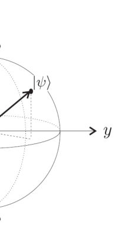

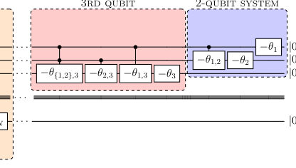
Summary. This paper introduces a novel geometric model that extends the Bloch sphere concept to arbitrary N-qubit systems using $2N - 1$ interconnected spheres. It formally proves a bijection between the standard state vector and these angular parameters by systematically decomposing any quantum state into a sequence of controlled rotations acting on the vacuum state. This offers an advanced visualization tool for understanding multipartite entanglement.
Why it may be interesting. This work provides a powerful, geometrically intuitive framework for visualizing and parameterizing high-dimensional quantum states, which is crucial for developing efficient quantum simulation algorithms or understanding the structure of entanglement in complex quantum circuits.
Main problem. The primary challenge is the lack of a widely accepted, intuitive geometric model to represent multi-qubit quantum states that generalizes the single-qubit Bloch sphere concept while accounting for entanglement.
Main result. The authors establish a general framework showing that an N-qubit state can be uniquely parameterized by $2N - 1$ spheres through controlled rotations, providing a structured geometric description of multipartite entanglement.
Method. The methodology involves deriving explicit parameterizations and proving bijections between the standard complex amplitude representation (state vector) and the proposed set of angular parameters using systematic application of controlled rotation gates.
Model / system. The system is an N-qubit quantum state, $| ext{Q} angle$, whose geometry is mapped onto a structure involving multiple interconnected spheres representing individual qubit states and various levels of entanglement (bipartite, tripartite, etc.).
Key observables. State vector components ($A_x e^{i\phi_x}$), angular parameters ($ heta_i, \varphi_{J,k}$), and the resulting unitary transformations required to reach a canonical form.
Important parameters / regimes. The number of qubits ($N$), which dictates the complexity (number of spheres/rotations); specific angles associated with single-qubit rotations and entanglement interactions.
Assumptions / limitations. The model relies on assuming that complex amplitudes can be factored into moduli and phases, and it uses controlled rotation gates to systematically transform any state into a canonical form relative to the $|0 angle^{\otimes N}$ basis.
Figures summary. Figure 1 illustrates the single-qubit Bloch sphere. The text references tables showing parameterization details for two and three qubits, demonstrating how sequential rotations zero out phases in the state vector components.
Paper structure. The paper progresses by first establishing the model for 2 qubits (three spheres), then generalizing this structure to N qubits using controlled rotation gates ($V^J_i U$), culminating in a systematic algorithmic proof that any state can be written as a product of these rotations acting on $|0 angle^{\otimes N}$.
The Bloch sphere is an elegant tool for representing single-qubit states. However, a widely accepted generalization for multi-qubit systems with entanglement remains absent. We propose a novel geometric model extending the Bloch sphere representation to arbitrary $N$-qubit systems using $2^N-1$ spheres. We demonstrate that any pure 2-qubit state is uniquely described by three spheres: two for individual qubits and a third encapsulating bipartite entanglement. Generalizing this, we establish an $N$-qubit parameterization through the hierarchical application of controlled rotation gates along the $Z$ and $Y$ axes. We formally prove a strict bijection between the standard state vector representation and our model's angular parameters. This framework provides an intuitive visualization of multiple entanglement, offering potential computational advantages for quantum simulators and new analytical perspectives on quantum gates.
Authors: Leonardo Finocchiaro, Marco Robbio, Diogo Gomes, David Gunn, Adithi Udupa, Axel M. Eriksson, Leonardo Novo, Giulia Ferrini
Type: theory · Category: quantum information and computing · PDF: https://arxiv.org/pdf/2607.04914v1
Analysis basis: full PDF text, analyzed in chunks
Topic relevance: interference shaping light 3/5 · quantum measurements 3/5 · quantum optics experiment 3/5 · QC/QI experiment 2/5 · measurement-induced transitions 2/5 · methods for driven-dissipative 2/5 · Keldysh / 2PI / non-Gaussian methods 1/5 · analog quantum simulation 1/5 · correlated / nonlocal dissipation 1/5 · correlated cavity matter 1/5 · driven-dissipative phase transition 1/5 · entanglement & information structure 1/5 · non-equilibrium dynamics 1/5


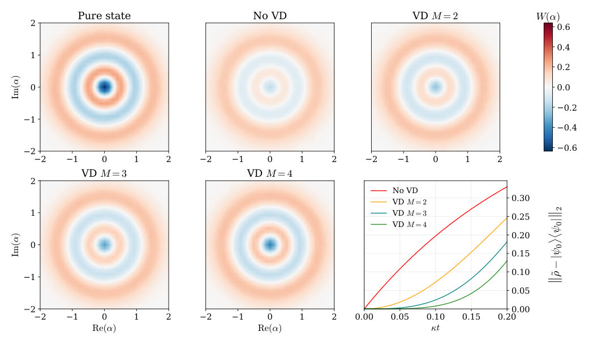


Summary. This paper develops a comprehensive framework to apply virtual distillation—an error-mitigation technique—to bosonic and continuous-variable quantum systems. By utilizing passive linear-optical interferometers, the authors derive protocols to estimate key observables like number operators and quadratures with noise suppression. This provides a practical pathway for performing reliable measurements on noisy photonic quantum processors.
Why it may be interesting. This work directly bridges quantum optics/bosonic physics with quantum information theory by providing concrete, experimentally viable error mitigation techniques applicable to CV quantum computing platforms.
Main problem. The primary goal is to extend the error mitigation technique of virtual distillation (VD) from qubit systems to bosonic quantum information processing and continuous-variable (CV) quantum computing.
Main result. The authors establish a general, experimentally accessible framework for VD in bosonic systems using passive linear-optical interferometers, allowing noise-mitigated estimation of various observables.
Method. They derive protocols based on diagonalizing cyclic shift operators implemented via linear optics to estimate expectation values $ ext{Tr}[\hat{O} ho^M]$ from multiple copies of the noisy state $ ho$.
Model / system. The work focuses on bosonic quantum systems, utilizing CV concepts like quadrature and number operators. The physical implementation relies heavily on passive linear-optical interferometers.
Key observables. Number operators ($\hat{N}$), phase-shift operators, arbitrary quadratures ($\hat{q}, \hat{p}$), and correlators of arbitrary order (via characteristic functions).
Important parameters / regimes. The error suppression scales exponentially with the number of copies ($M$), and analysis involves sample complexity scaling laws related to desired accuracy $\epsilon$.
Assumptions / limitations. The effectiveness relies on assumptions about the noise structure, such as the ability to relate the noisy state to a dominant pure state $|\psi_0 angle$ (Eq. 1).
Figures summary. Figures illustrate the comparison of estimated correlators ($\langle \hat{n}_1\hat{n}_2 angle$) versus internal state purity, demonstrating noise suppression via error mitigation techniques.
Paper structure. The paper builds from establishing the general VD framework for bosons, detailing specific measurement protocols using single and two interferometers for different observables (quadratures vs. parity), and concluding with rigorous error bounding analysis for correlators.
Virtual distillation is a promising error-mitigation technique that exploits multiple copies of a noisy quantum state to estimate observables as if measured on a purified state. Although originally introduced in the context of bosonic many-body systems under the name of virtual cooling, its development and applications have largely focused on qubit-based quantum computation. Here, we establish a framework for virtual distillation in bosonic quantum information processing and continuous-variable quantum computing. Building on a diagonalization of cyclic shift operators implemented with passive linear-optical interferometers, we derive experimentally accessible protocols for estimating virtually distilled expectation values of observables relevant to bosonic architectures. In particular, we show how to recover noise-mitigated expectation values of number operators, phase-shift operators, and arbitrary quadratures from multi-copy measurements. For number operators, we further demonstrate the estimation of virtually distilled correlators of arbitrary order through the characteristic function of the photon-number distribution. We apply the framework to states affected by photon loss and dephasing, two of the dominant noise mechanisms in bosonic quantum computation, and quantify the resulting suppression of noise contributions. Our results extend virtual distillation beyond its original setting and provide a practical route toward error-mitigated measurements in bosonic quantum processors using experimentally available linear-optical resources.
Authors: Abhishek Chowdhury, Ajit Prasad Mahapatra
Type: theory · Category: other · PDF: https://arxiv.org/pdf/2607.05294v1
Analysis basis: full PDF text, analyzed in chunks
Topic relevance: Keldysh / 2PI / non-Gaussian methods 3/5 · methods for driven-dissipative 3/5 · analog quantum simulation 2/5 · correlated / nonlocal dissipation 2/5 · driven-dissipative phase transition 2/5 · entanglement & information structure 2/5 · non-equilibrium dynamics 2/5 · Tavis-Cummings & cavity-many-emitter 1/5 · correlated cavity matter 1/5 · non-equilibrium universality 1/5

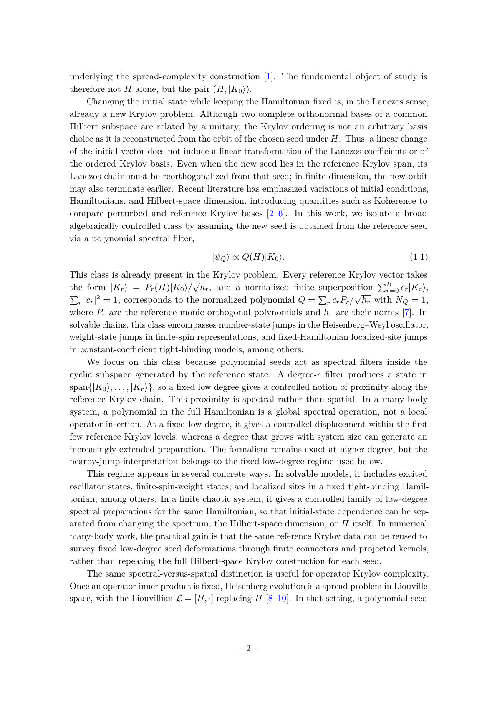
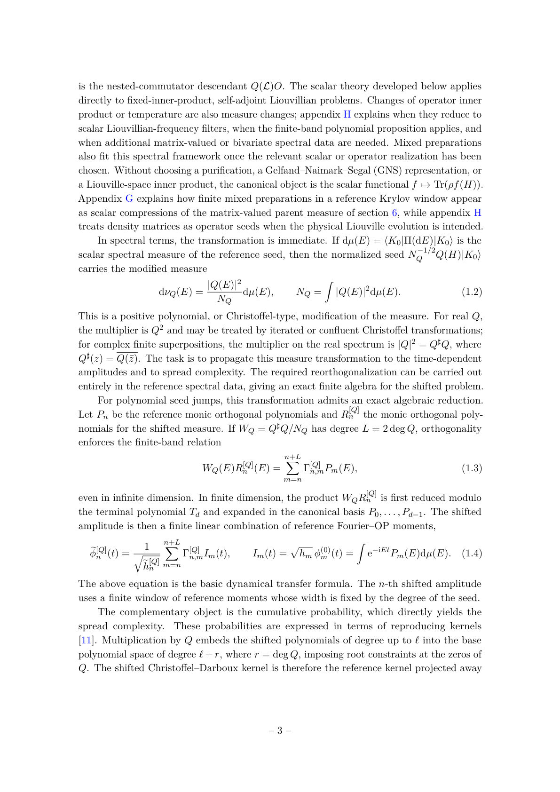


Summary. This theoretical paper develops an exact mathematical framework to calculate how the spectral complexity of a quantum system changes when its initial state is filtered by a polynomial function $Q$. By relating the modified spectral measure to finite-band algebraic structures, it provides closed-form expressions for observables like spread complexity across various physical models, including spin chains and harmonic oscillators.
Why it may be interesting. This work provides a powerful algebraic tool—a 'relative calculus'—to analyze spectral properties like complexity in open or modified quantum systems without resorting to computationally expensive full-space simulations. This is highly relevant for understanding decoherence and state preparation effects in AMO physics.
Main problem. The paper addresses the 'relative initial-state problem' for Krylov complexity, which quantifies how changing the initial state of a quantum system affects its spectral properties.
Main result. It derives an exact relative calculus allowing the calculation of shifted amplitudes and projected Christoffel-Darboux kernels without recomputing the full Lanczos procedure in the original Hilbert space.
Method. The core method involves using polynomial spectral filters $Q(H)$ to define a modified spectral measure, which is then transformed into finite sums for amplitudes via an 'exact finite algebra' relating shifted quantities to reference moments.
Model / system. The formalism applies to general quantum evolution governed by a Hamiltonian $H$ acting on an initial state $|K_0 angle$, and extends this analysis to operator dynamics using the Liouvillian superoperator $\mathcal{L}$.
Key observables. Krylov Complexity / Spread Complexity, projected Christoffel-Darboux kernels, shifted amplitudes ($\phi_n[Q](t)$), and spectral measures ($d u_Q(E)$).
Important parameters / regimes. The polynomial filter $Q$, the initial state $|K_0 angle$, and the dimensionality/finite size of the system.
Assumptions / limitations. The analysis relies on fixing an inner product (scalar or operator) and assumes that spectral changes can be modeled by polynomial filters, allowing for a finite-band transfer approach.
Paper structure. The paper develops the formalism by first defining the relative state jump via $Q(H)|K_0 angle$, deriving the modified spectral measure, and then using Christoffel transforms to find exact sums for amplitudes and kernels. It validates this machinery across three canonical Jacobi families (Charlier, Krawtchouk, Chebyshev) before generalizing it to operator dynamics.
State Krylov, or spread, complexity is a property of a pair $(H,\ket{K_0})$ rather than of the Hamiltonian alone. Thus, changing the initial state at fixed $H$ generally changes the Lanczos coefficients and the ordered Krylov basis. We solve this relative initial-state problem for normalized polynomial filters, $\ket{ψ_Q}=Q(H)\ket{K_0}/\sqrt{N_Q}$ with $N_Q=\langle K_0|Q(H)^\dagger Q(H)|K_0\rangle$. The filtered spectral measure is the positive polynomial modification $|Q(E)|^2\mathrm dμ(E)/N_Q$, and orthogonality turns this measure change into a finite-band transfer from reference Fourier-orthogonal-polynomial moments to shifted Krylov amplitudes. We derive exact finite sums for individual amplitudes and projected Christoffel-Darboux kernels for cumulative probabilities and spread complexity. The formulae cover confluent roots, complex seed coefficients, support loss, and terminal quotients in finite dimensions. We evaluate the construction in three canonical Jacobi families, the Heisenberg--Weyl/Charlier oscillator, the compact $SU(2)$/Krawtchouk spin, and the constant-coefficient tight-binding/Chebyshev chain, with a Hermite central-limit scaling of Charlier as a continuous-spectrum check of this Christoffel jump machinery. Finite seed families are organized by a matrix-valued parent measure whose scalar compressions recover the individual shifted problems. The fixed-inner-product construction carries over to operator Krylov complexity after the replacement \(H\mapsto\mathcal L\) and \(\ket{K_0}\mapsto O\); polynomial seeds then become nested-commutator descendants \(Q(\mathcal L)O\). The result is an exact relative calculus in which a solved cyclic problem generates a family of polynomially related initial-state dynamics without repeating Lanczos in the original Hilbert space.
Authors: Charles C. Tam, Alon Hendler Avidor, Pritam Bhattacharyya, Yongseong Choi, Daniel Haskel, Sven Luther, Hlynur Gretarrson, Liviu Hozoi, Stephen D. Wilson
Type: both · Category: strongly correlated electrons · PDF: https://arxiv.org/pdf/2607.05287v1
Analysis basis: full PDF text, analyzed in chunks
Topic relevance: analog quantum simulation 3/5 · exotic spin models in light-matter 3/5 · spintronics-quantum-optics interface 3/5 · driven-dissipative phase transition 2/5 · non-equilibrium universality 2/5 · Keldysh / 2PI / non-Gaussian methods 1/5 · Kondo & dissipative impurity 1/5 · methods for driven-dissipative 1/5 · non-equilibrium dynamics 1/5 · scars & prethermalization 1/5
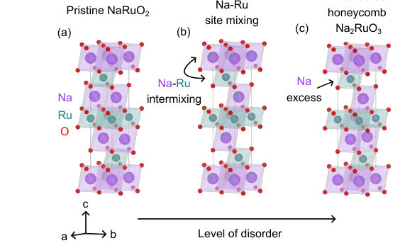
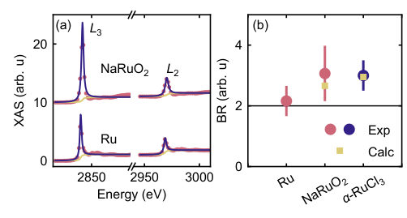
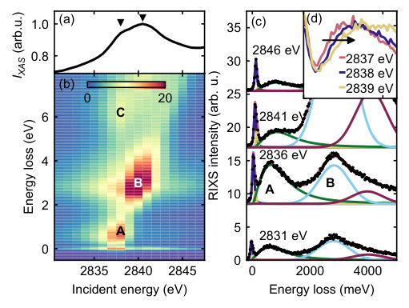
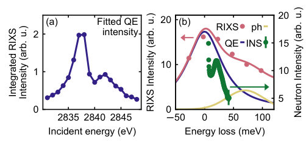
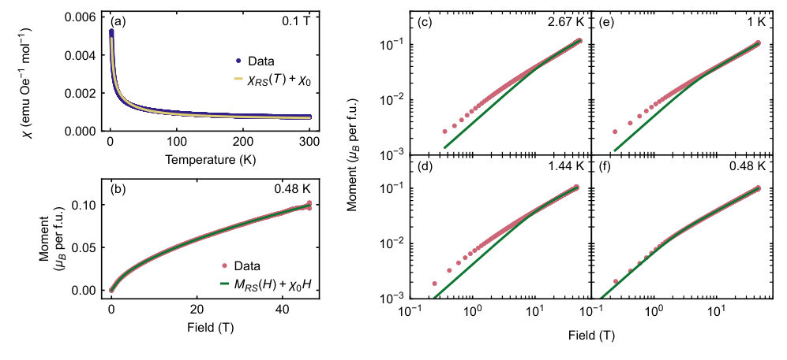
Summary. This work investigates the exotic magnetic state of NaRuO2, finding that its behavior is best described as a nearly itinerant system rather than a simple Mott insulator. By combining RIXS and high-field magnetization measurements with Random Singlet Model fitting, the authors conclude that strong charge fluctuations are key in suppressing long-range magnetic order into a slow singlet formation regime.
Why it may be interesting. The interplay between charge fluctuations (suggested by RIXS findings) and magnetic disorder (confirmed by RSS fits) provides a rich model for understanding quantum criticality in strongly correlated oxides, relevant to many-body dynamics.
Main problem. To characterize the physical regime responsible for the quantum disordered magnetic ground state observed in NaRuO2, specifically distinguishing between contributions from charge fluctuations versus strong magnetic interactions.
Main result. The evidence points towards a nearly itinerant system dominated by strong magnetic and charge fluctuations that destabilize long-range magnetic order, suggesting slow singlet formation rather than purely localized magnetism.
Method. A combination of advanced experimental techniques (RIXS, XAS, high-field magnetization) and theoretical modeling using the Random Singlet Model was employed.
Model / system. The study focuses on NaRuO2, a ruthenate oxide with a triangular lattice structure exhibiting no magnetic order down to very low temperatures. The physics is analyzed through comparisons to Mott insulators and models like the Kitaev exchange model.
Key observables. XAS Branching Ratio (SOC strength), RIXS excitations (damped intraorbital modes), high-field magnetization scaling exponents ($\alpha$), and susceptibility temperature dependence ($\chi(T)$).
Important parameters / regimes. Low temperatures ($<100 ext{ mK}$), SOC strength comparable to $\alpha$-RuCl3, and the power-law exponent $\alpha$ from RSS fits.
Assumptions / limitations. The analysis assumes that deviations from simple magnetic ordering are governed by itinerant behavior and disorder effects, leading to a random singlet state description.
Figures summary. Figures illustrate XAS spectra comparing NaRuO2 to other materials, RIXS energy maps showing excitation modes (A, B, C), and magnetization data fitted to the Random Singlet State model.
Paper structure. The paper systematically uses spectroscopic measurements (XAS/RIXS) to probe electronic structure and then applies high-field magnetization and susceptibility analysis, fitting the results to the Random Singlet Model to deduce the nature of the magnetic ground state.
NaRuO$_2$ forms a delafossite-like structure that contains triangular sublattices of edge-sharing RuO$_6$ octahedra. It shows no evidence of magnetic order down to 100 mK and persistent spin fluctuations, suggestive of a quantum disordered magnetic ground state. In order to characterize the physical regime from which this disordered state arises, we use resonant inelastic X-ray scattering (RIXS) and X-ray absorption spectroscopy (XAS) at the Ru-$L_{2,3}$-edge, along with pulsed high-field magnetization to characterize both the local electronic structure and the magnetic interactions. Despite significant spin-orbit coupling inferred from XAS measurements, a spin-orbit exciton, characteristic of a spin-orbit assisted Mott insulator, was not observed with RIXS due to the presence of damped intraorbital excitations, which are characteristic of a metal. Corroborated by models of the high-field magnetization to a random singlet model, we propose a picture of a nearly itinerant system with strong magnetic and charge fluctuations that destabilize long-range magnetic order.
Authors: Chan Li, Nigel Goldenfeld
Type: theory · Category: disordered systems and neural networks · PDF: https://arxiv.org/pdf/2607.04135v1
Analysis basis: full PDF text, analyzed in chunks
Topic relevance: driven-dissipative phase transition 3/5 · methods for driven-dissipative 3/5 · non-equilibrium universality 3/5 · non-equilibrium dynamics 2/5 · scars & prethermalization 2/5 · Frenkel-Kontorova 1/5 · Keldysh / 2PI / non-Gaussian methods 1/5 · correlated / nonlocal dissipation 1/5


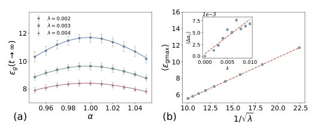
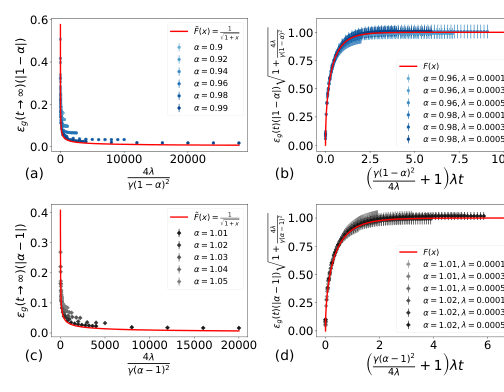
Summary. This work explains the counterintuitive 'double descent' in overparameterized neural networks by framing it as a dynamical phase transition. The key diagnostic tool is the breakdown of the Fluctuation-Dissipation Theorem (FDT). This mechanism links successful generalization to concepts from condensed matter physics, specifically those governing superconducting transitions.
Why it may be interesting. It provides a deep theoretical link between non-equilibrium statistical physics concepts (ergodicity breaking, FDT violation) and modern machine learning phenomena, suggesting that generalization is governed by underlying physical principles of ordered phases.
Main problem. The paper addresses the 'double descent' phenomenon in overparameterized neural networks, seeking a physical mechanism beyond classical bias-variance trade-offs.
Main result. This generalization behavior is shown to be the outcome of a dynamical phase transition marked by the breakdown of the Fluctuation-Dissipation Theorem (FDT) and associated with broken ergodicity.
Method. The analysis employs Dynamical Mean-Field Theory (DMFT) applied to the stochastic gradient flow describing network training dynamics in the thermodynamic limit.
Model / system. The system models single-layer linear regression trained via SGD, analyzed by mapping its dynamics onto an effective stochastic process analogous to superconducting phase transitions.
Key observables. Generalization error ($\epsilon_g$), training error ($\epsilon_t$), Response function $R(t, t')$, and the violation of the Fluctuation-Dissipation Theorem (FDT).
Important parameters / regimes. The complexity parameter $\alpha = d/N$, which dictates the regime: underparameterized ($\alpha < 1$), interpolation threshold ($\alpha = 1$), and overparameterized ($\alpha > 1$).
Assumptions / limitations. The use of DMFT approximations, assuming a saddle-point approximation for the dynamical generating functional, and drawing analogies to established condensed matter models like the London model.
Figures summary. Not specified in notes; figures likely illustrate the divergence/convergence of generalization error across different $\alpha$ regimes and the mathematical forms of correlation functions before and after FDT violation.
Paper structure. The paper progresses by first establishing the ML problem (double descent), then applying DMFT to derive the effective dynamics, identifying the FDT breakdown as the key diagnostic for a dynamical phase transition, and finally drawing precise analogies between this transition and superconductivity/London models.
The remarkable ability of modern neural networks to generalize improves with increasing network capacity, even when the number of model parameters or effective degrees of freedom exceeds the number of training data points. This phenomenon is all the more surprising given that generalization error diverges when the number of model parameters approaches a critical value from below. Here we use dynamical mean field theory to show that this so-called "double descent" behavior is the outcome of a phase transition in the stochastic field theory describing the training process. We calculate the critical exponents and scaling function of the double descent phase transition, and show that it is marked by a breakdown of the fluctuation-dissipation theorem associated with broken ergodicity. The corresponding response function has the same functional form as the simple London model of the superconducting transition, with the rigidity of the wave function corresponding to the neural network's ability to generalize accurately.
← Index · ← Previous · Next →